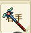
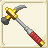
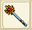
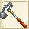

| 杖作成 | ||||
| 画像 | 名称 | 性能 | 材料 | |
| 台湾表示 | ||||
| 杖作成Lv1 | ||||
| ショートワンド | ATK+5 MND+4〜+5 ADM+11〜+14 |
銅4 バルサ20 |
||
| 短杖 | ||||
| ショートスタッフ | ATK+5〜+10 MND+5 ADM+11〜+12 |
銅6 鉄2 バルサ20 |
||
| 權杖 | ||||
| 杖作成Lv2 | ||||
| スティックオブアース | ATK+5 MND+8〜+10 ADM+42〜+48 |
鉄10 バルサ20 モミ20 |
||
| 大地之杖 | ||||
| スタッフオブスプラッシュ | ATK+11〜+20 MND+5 ADM+42〜+45 |
鉄12 バルサ20 モミ20 イエローメランチ20 |
||
| 激流權杖 | ||||
| 杖作成Lv3 | ||||
| マジカルロッド | ATK+5 MND+12〜+15 ADM+73〜+82 |
鉄14 銀2 モミ20 バルサ20 イエローメランチ20 |
||
| 魔之手杖 | ||||
| マジカルスタッフ | ATK+19〜+30 MND+5 ADM+73〜+77 |
鉄11 銀8 バルサ20 イエローメランチ20 ツガ20 |
||
| 魔之權杖 | ||||
| 杖作成Lv4 | ||||
|  | ワイズロッド | ATK+5 MND+16〜+20 ADM+104〜+116 |
銀10 純銀10 ツガ20 バルサ20 モミ20 |
|
| 賢者手杖 | ||||
| ワイズスタッフ | ATK+28〜+40 MND+5 ADM+104〜+110 |
銀12 純銀12 モミ20 ツガ10 ヒバ20 |
||
| 賢者權杖 | ||||
| クイーンブレス | RCV+2〜+5 CRI-1〜+1 CTR-1〜+1 HIT-1〜+1 AVD-1〜+1 クエストで使用 |
純銀5 銀1 金1 チタン鉱石20 フローズンアイリス20 |
||
| 杖作成Lv5 | ||||
| アンバースティック | ATK+5 MND+20〜+25 ADM+135〜+150 |
金16 モミ20 イエローメランチ20 ツガ20 ヒバ20 |
||
| 琥珀杖 | ||||
| アンバースタッフ | ATK+37〜+50 MND+5 ADM+135〜+142 |
金17 イエローメランチ20 ツガ20 ヒバ20 アカマツ20 |
||
| 琥珀權杖 | ||||
|  | グロント | ATK+36〜53 DEF+5 MND+5 RCV+1〜6 ADM+138〜142 |
アカマツ20 ヒバ20 ツガ20 ぐみの木20 アルマイト7 |
|
| 魔晶之杖 | ||||
| 杖作成Lv6 | ||||
| エレメンタルセプター | ATK+5 MND+24〜+30 ADM+166〜+184 |
白金16 イエローメランチ20 ツガ20 ヒバ20 アカマツ20 |
||
| 元素之杖 | ||||
| ホーリーブレア | ATK+46〜+60 MND+5 ADM+166〜+175 |
白金17 ツガ20 ヒバ20 アカマツ20 ホオノキ20 |
||
| 神聖之杖 | ||||
| 杖作成Lv7 | ||||
| スティックオブサイレンス | ATK+5 MND+28〜35 ADM+197〜+218 |
ミスリル鋼18 ツガ20 ヒバ20 アカマツ20 ホオノキ20 |
||
| 怒音之杖 | ||||
| ハーミットスタッフ | ATK+55〜+70 MND+5 ADM+197〜+207 |
白金12 ミスリル鋼9 ヒバ20 アカマツ20 ホオノキ20 |
||
| 隱者之杖 | ||||
| 水龍の杖 | ATK+70 MND+35 ADM+218 |
ホオノキ20 マイティナイト2 魔族のクリスタル2 朽ちた杖1 |
||
| 水龍之杖 | ||||
| 杖作成Lv8 | ||||
| ライトワンド | ATK+5 MND+32〜+40 ADM+228〜+252 |
白金10 ミスリル鋼12 アカマツ20 ホオノキ20 スギ20 |
||
| 光明短杖 | ||||
| デビルスタッフ | ATK+64〜+80 MND+5 ADM+228〜+240 |
ミスリル鋼10 ミスリル銀7 アカマツ20 ホオノキ20 スギ20 |
||
| 惡魔之杖 | ||||
| ハーミットスタッフ＋ | ATK+52〜+70 MND+28〜+35 ADM+197〜+207 |
ミスリル銀15 ホオノキ20 スギ20 ブルードラゴンの鱗20 スワンプヴァイパー10 |
||
| 落雷權杖+ | ||||
| 杖作成Lv9 | ||||
|  | ワンドオブサン | ATK+5 MND+36〜+45 ADM+259〜+286 |
ミスリル銀15 スギ20 ヒノキ20 |
|
| 太陽短杖 | ||||
| スタッフオブジャッジメント | ATK+73〜+90 MND+5 ADM+259〜+272 |
ミスリル銀15 スギ20 ヒノキ20 |
||
| 天使之杖 | ||||
| 杖作成Lv10 | ||||
| ホーリースティック | ATK+5 MND+40〜+50 ADM+290〜+320 |
オリハルコン10 ヒノキ20 |
||
| 聖者之杖 | ||||
| スターダスト | ATK+82〜+100 MND+5 ADM+290〜+305 |
レグネシウム15 ヒノキ20 トリネコ20 |
||
| 星屑短杖 | ||||
| 杖作成Lv11 | ||||
| ケテルハンド | MND+58〜68 AVD+11 ADM+303〜330 |
トネリコ40 ヒノキ40 レグネシウム3 ダマスクス鉱3 魔族のクリスタル1 |
||
| 王者之手 | ||||
|  | マルクトスター | ATK+182〜200 DEF+54 HIT+11 ADM+234〜252 |
トネリコ40 ヒノキ40 シングロール40 レグネシウム3 魔族のクリスタル1 |
|
| 星錘杖 | ||||